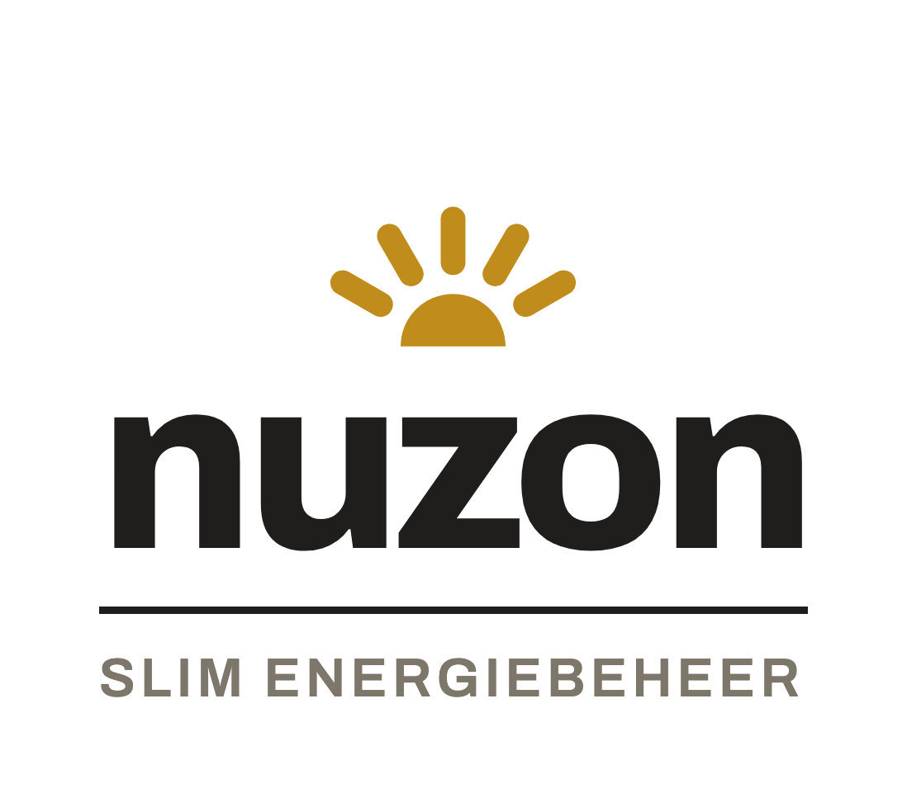
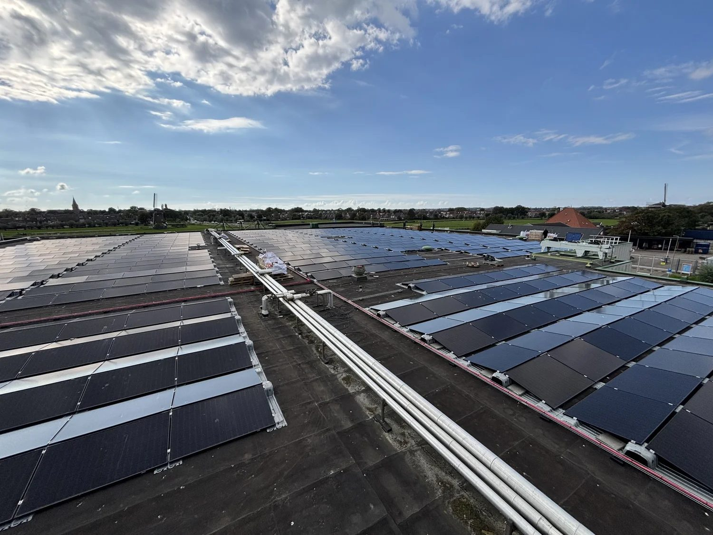
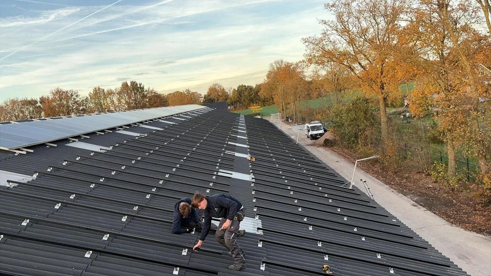
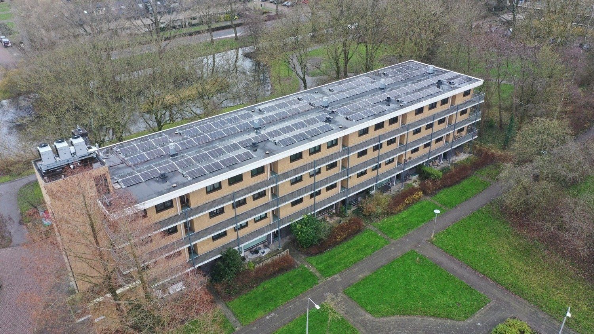
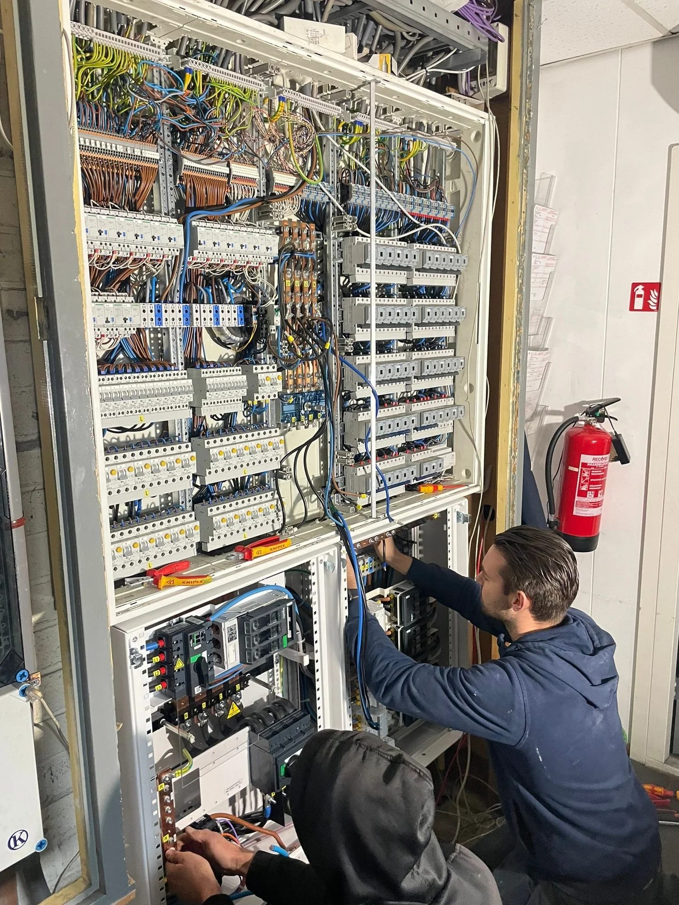
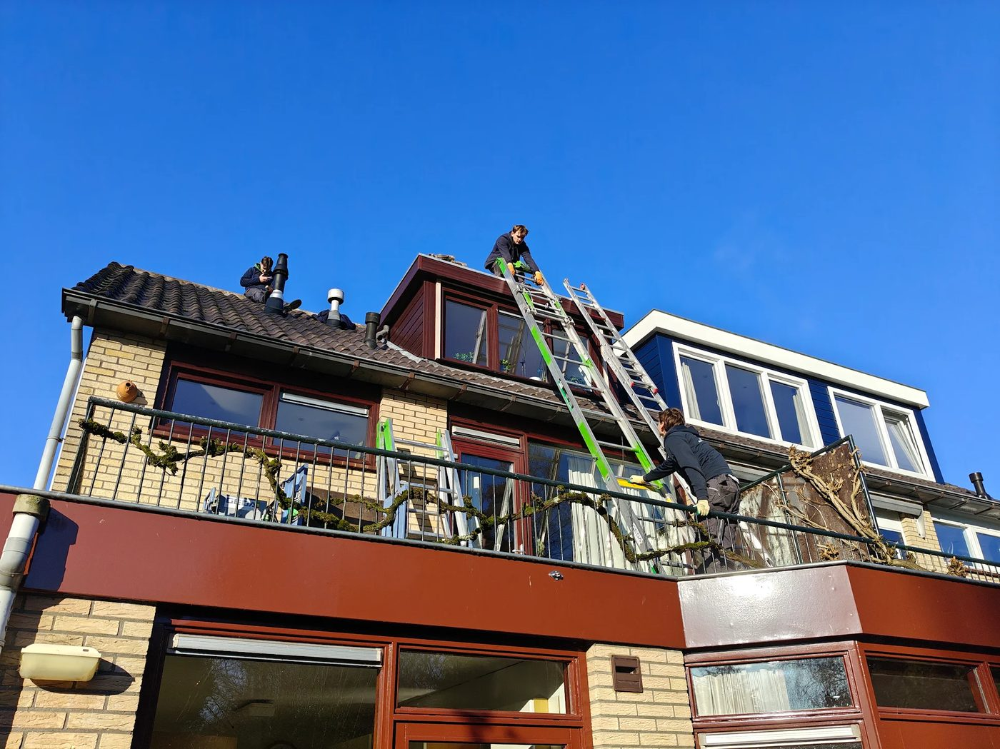
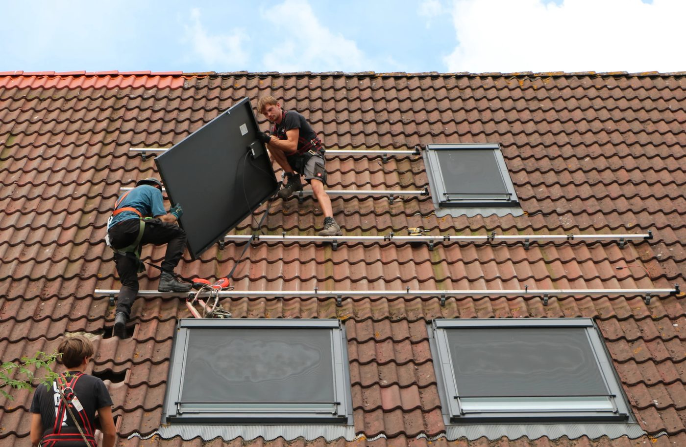
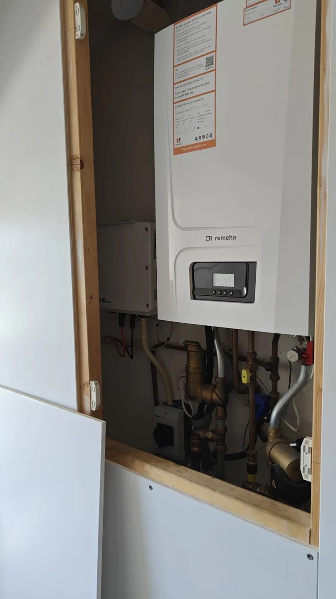

ZusterbedrijfNuZon B.V.
NuZon plaatst sinds 2012 zonnepanelen vanuit Soest. NuZon en JTS zijn twee zelfstandige bedrijven met dezelfde eigenaren: NuZon is de naam, de historie en de klanten — JTS doet het werk.
Bezoek NuZon →Bij JTS Installatietechniek draait het om techniek die klopt. Wij realiseren complete, technische en duurzame installaties voor zowel particulieren als bedrijven. Altijd veilig, netjes en met oog op de toekomst.

Bij nieuwbouw, renovatie, uitbreiding of verduurzaming zorgen wij dat de elektrotechnische en duurzame installaties kloppen — nu én later.

Vraag een offerte aanBij veel bedrijven zit de pijn niet in het jaarverbruik, maar in korte pieken: alles tegelijk aan en je installatie “zit vol”. Dat merk je aan beperkingen, zoals geen ruimte voor extra machines, koeling, keuken of laders.
Wij maken het simpel: waar komt de piek vandaan, en wat is de goedkoopste, veilige oplossing? Vaak is dat eerst slimmer schakelen, en soms een batterij die tijdelijk bijspringt — alleen als het klopt.
Machines, koeling, keuken, compressor: ’s ochtends of rond de lunch gaat alles aan. Startmomenten spreiden en prioriteiten instellen geeft rust én voorkomt dat je te snel aan verzwaring denkt.
Zonder load balancing trekken laadmomenten je piek onnodig omhoog. Wij ontwerpen een laadplein schaalbaar, met sturing zodat je installatie niet “op slot” gaat.
Uitbreiden kan vaak wél, maar niet zomaar “erbij”. Met fasebalans, reserves, logische groepen en slimme sturing maken we je installatie groei-proof.
Nuchter rekenvoorbeeld. 30 kW structureel lager kan, afhankelijk van de tariefcategorie, grofweg ±€200 per maand schelen aan netbeheer-transportcomponenten. Wij beloven dit nooit zomaar: we bepalen het op basis van jouw meetdata en tariefindeling.
Meer voor bedrijven
JTS Installatietechniek is opgericht door Jesse Odijk, Tjark Boot en Stijn Ronner. In december 2022 schreven wij ons in bij de Kamer van Koophandel, met één duidelijke ambitie: bouwen aan iets van onszelf.
Vandaag bestaat JTS uit een hecht en groeiend team. Naast de oprichters werken Ruben Striekwold en Sebastiaan Odijk bij ons. Samen staan we voor kwaliteit, verantwoordelijkheid en oplossingen die klaar zijn voor de toekomst.
Lees ons hele verhaal →
Deze jonge en zeer professionele mannen, met heel goede omgangsvormen, kwamen in eerste instantie omvormers van onze zonnepanelen vervangen. Dit werd snel en professioneel uitgevoerd. Zij kwamen er achter dat een aantal van onze nokpannen stuk waren. Snel en professioneel hebben zij de hele nok vernieuwd. Er was nog net geen lekkage ontstaan en wij zijn zeer blij dat zij dit op tijd ontdekten en voor zover zien kwaliteit goed.

Deze jonge mannen hebben bij ons de zonnepanelen gedemonteerd en later, na de nieuwe dakpannen weer hermonteerd. Wij zijn heel tevreden van JTS. Echt vriendelijke, meedenkende, professionele en eerlijke werkers, die hun afspraken na kwamen. De kosten waren heel transparant en wij kwamen niet voor verassingen te staan. Ga zo door en succes met jullie bedrijf!

Deze getalenteerde en jonge heren hebben mijn dak voorzien van een prachtige set zonnepanelen. Netjes op tijd, communicatief geweldig, professioneel en denken met je mee. Het resultaat mag er zeker zijn, zoals het netjes verwerken van de omvormer in de ombouwkast van de CV. Ik zie ze graag nog eens terug voor wat andere klussen in de nabije toekomst!

Wij hebben 48 zonnepanelen en wilde een 50 KW batterij laten installeren. Dat hebben ze snel en zeer professioneel gedaan!! Alles mooi weggewerkt , nieuwe stoppenkast en een aansluiting voor een eventuele generator. Buiten het feit dat w hun werk zeer goed hebben gedaan zijn het ook nog aardige jongens !!! Zeer aan te bevelen

ZusterbedrijfNuZon plaatst sinds 2012 zonnepanelen vanuit Soest. NuZon en JTS zijn twee zelfstandige bedrijven met dezelfde eigenaren: NuZon is de naam, de historie en de klanten — JTS doet het werk.
Bezoek NuZon →Partner in duurzame installatietechniek en energiemanagement met ruim 25 jaar ervaring. Bij grote projecten, zoals opslag en laadpleinen, werken we samen; de uitvoering ligt bij JTS.
Over East Connect →Stuurt zon, batterij, laadpaal en verbruik thuis slim aan. JTS is gecertificeerd Jullix-partner.
Voor zakelijke installaties werken wij met Embion: laadpalen, klimaat en machines efficiënt op elkaar afgestemd, zonder piekbelasting.